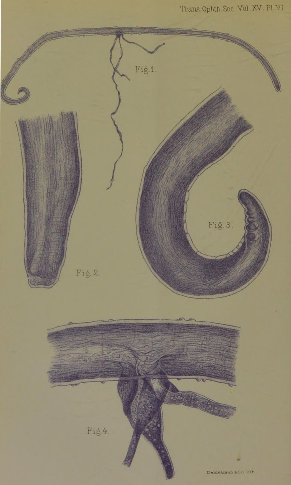
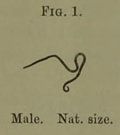
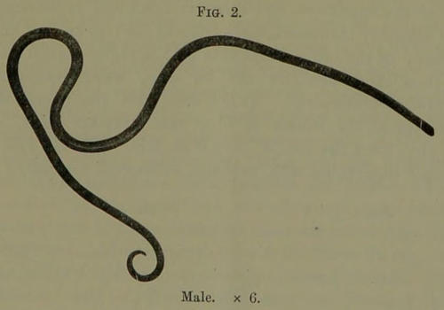
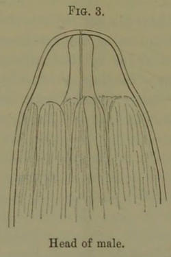
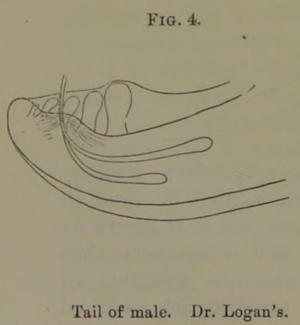
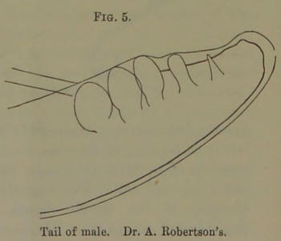
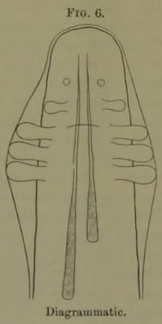
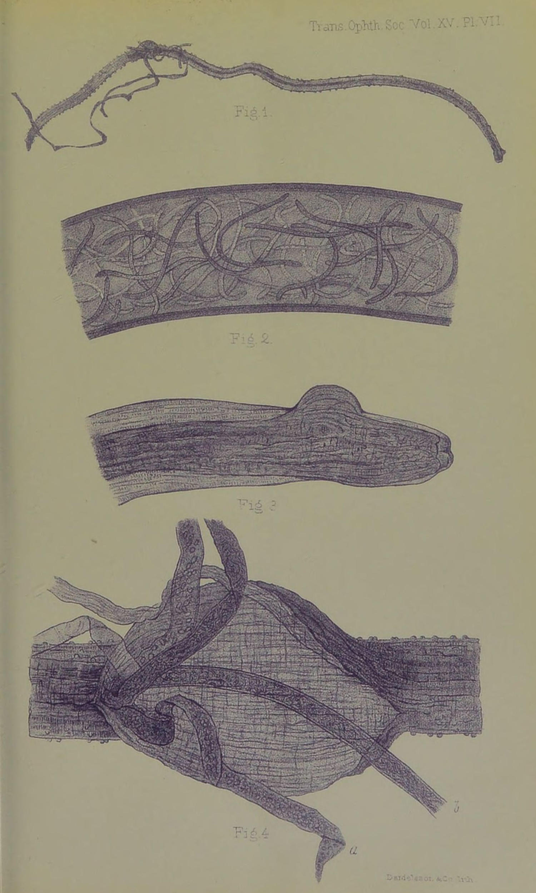

Title: Case of Filaria loa
Author: Douglas Argyll Robertson
Release date: February 1, 2023 [eBook #69927]
Language: English
Original publication: United Kingdom: Adlard & Son, 1895
Credits: deaurider and the Online Distributed Proofreading Team at https://www.pgdp.net (This file was produced from images generously made available by The Internet Archive)
BY
D. ARGYLL ROBERTSON, M.D., F.R.C.S.Ed.,
OCULIST TO H.M. THE QUEEN IN SCOTLAND; PRESIDENT OF THE
OPHTHALMOLOGICAL SOCIETY OF THE UNITED KINGDOM; LECTURER ON
DISEASES OF THE EYE IN THE UNIVERSITY OF EDINBURGH, ETC.
Reprinted from the ‘Transactions of the Ophthalmological Society.’
LONDON:
PRINTED BY ADLARD AND SON,
BARTHOLOMEW CLOSE, E.C., and 20, HANOVER SQUARE, W.
1895.
PLATE VI
Illustrates Dr. Argyll Robertson’s paper on Filaria loa.
Male Filaria Loa.
Fig. 1.—The whole worm. Portions of the testicles and alimentary canal protruding through a rupture of the wall of the parasite.
Fig. 2.—The head of the worm.
Fig. 3.—The curved tail of the worm with its papillæ.
Fig. 4.—The ruptured part of the worm with protruding alimentary canal and testes.
Case of Filaria loa, in which the parasite was removed from under the conjunctiva.
By D. Argyll Robertson.
(With Plate VI.)
On the 29th of June last I was consulted by Miss J. H⸺ on account of what she termed the presence of a worm in her eye.
She is a slightly anæmic, prematurely grey-haired, but otherwise healthy-looking lady, thirty-two years of age. She has resided at Old Calabar on the West Coast of Africa at intervals, for nearly eight years altogether. She twice had to return home on account of debility following severe intermittent fever. During her last visit to Old Calabar, which extended to about eighteen months, she suffered almost the whole time from chronic dysentery followed by severe remittent fever, which necessitated her return to this country last January in a very weak state of health.
She stated that the worm was first observed by her in February of this year, immediately after her return home. It frequented both eyes, but showed a preference for the left one, sometimes coursing over the surface of the eye under the conjunctiva, sometimes wriggling under the skin of the eyelids—causing a tickling, irritating sensation, but not real pain. It had latterly restricted its visits entirely to the left eye. On account of the remittent fever from which she was still suffering, her bedroom, when she first came home, was kept well heated, and until[2] she recovered from the fever she noticed that the worm was particularly lively, occasionally causing the eye to become bloodshot, and the eyelids to swell and blacken slightly. As long as she was confined to warm rooms the worm was almost constantly moving about in the neighbourhood of the eye, causing such irritation as to prevent reading or work of any kind. This irritation with accompanying injection always passed off in the course of the day, and never resulted in severe inflammation.
She thus found that the worm was sensitive to cold, coming to the surface when the temperature was high, and disappearing to deeper parts when she was exposed to cold. As soon as she had recovered strength so far as to be able to go out of doors the visits of the worm to the eye became fewer, perhaps a week or longer occurring between them. It usually put in an appearance when she was near a cosy fire or in bed. Its last disappearance was for two months, during July and August, and as she at that time passed a worm per rectum she thought she had thus got rid of it. During these two months she was mostly in the open air, but as soon as, in September, the rooms began to be heated, it again came to the surface.
When I first saw Miss H—, in June, I very thoroughly examined the eye, but failed to observe any trace of the parasite, unless perhaps the appearance of a minute bluish vesicle at the extreme outer angle of the conjunctival cul-de-sac corresponded to one of the extremities of the worm, but the vesicle, though watched for a time, did not alter in position or appearance. I gave her strict injunctions to return at any time whenever she felt the worm on the move.
I saw her twice at the eye wards of the Royal Infirmary about the beginning of July, but on these occasions careful inspection was again negative in its results.
On the 12th of September, however, she again came to the Infirmary, stating that she had felt the worm moving about in the left eye that forenoon, and to prevent it leaving the surface she had kept the eye well[3] covered with a warm cloth till she made her way to the Infirmary. On this occasion, after examining the eye for a minute or two, I observed the worm moving in a tortuous, wriggling manner under the conjunctiva, the surface of which became slightly elevated as it moved along.
It passed with a pretty quick movement over the surface of the sclerotic at the distance of about 5 mm. from the outer margin of the cornea. It glided from the upper outer towards the lower outer part of the globe. There was increased lachrymation and slightly increased injection of the conjunctiva,—just such an appearance as would result from a particle of dust in the eye.
I at once placed my finger on the surface of the globe in such a manner as to prevent the parasite passing backwards until the conjunctiva was pretty well anæsthetised by the application of cocaine. I then got my friend Dr. Maddox, who was present, to apply his finger while the necessary preparations were hastily made for an operation.
She was placed on a couch and the speculum applied, when the pressure of the finger having been removed the wriggling movements of the worm were resumed, as briskly as before the application of the cocaine. I now grasped with a pair of toothed fixing forceps a good fold of conjunctiva over the centre of the wriggling worm, taking care to include in the fold all structures superficial to the sclerotic. I next made with a pair of scissors an incision through the conjunctiva a little nearer the cornea, in such a manner as to lift up a small flap of conjunctiva, and after a little careful separation of the tissues found one extremity of the worm, which I seized with a pair of iris forceps. On now relaxing the fixing forceps the parasite came away readily. No irritation or inflammation followed the operation.
The worm presented the appearance of a piece of fishing-gut, being round, firm, transparent, and colourless. It wriggled slightly for a few minutes after removal while held in the forceps, but on being placed in a[4] solution of boracic acid, so as to prevent it becoming dry, it seemed completely to lose its vitality. It measured 25 mm. in length and barely half a millimetre in breadth. It terminated rather abruptly at one extremity, scarcely tapering at all, but at the other it gradually tapered to a pretty sharply curved fine point. Twisted round the worm, and apparently attached to it near its centre, was a much finer, less firm, transparent filamentous body, which I at first thought might possibly prove to be a second young filaria, or even the male filaria, but which on further careful microscopical examination appears to be the alimentary canal of the worm protruded through an opening in its musculo-cutaneous wall, caused by the forcible grasping of the parasite with the forceps.
The worm after removal was, on the suggestion of Dr. Muir, Pathologist to the Infirmary, placed in a mixture of equal parts of glycerine and methylated spirits, but the cork of the bottle in which the mixture was put had retained some of the blue colouring matter (methyl violet) of a solution previously in the bottle, and thus the preservative mixture became faintly blue-tinted. The parasite absorbed the colouring matter slightly, but the filamentous body projecting from it absorbed it more freely, becoming markedly blue-tinted. After remaining in the solution between three and four weeks the parasite was carefully mounted as a microscopic preparation in glycerine jelly by Mr. Simpson, assistant keeper of the University Anatomical Museum.
It is not my intention to attempt an account of the natural history of the parasite, as I propose to submit the specimen to some special authority in that department.
I have had some sketches of it made by a competent artist, and these, as well as the preparation itself under the microscope, I have pleasure in exhibiting to you.
It appears to me not improbable that this specimen may be found to supply what has hitherto been a missing link, namely, the male animal.
Since writing this I have had the opportunity of submitting[5] the specimen to Dr. Munson, who at once recognised it as the male worm, and has undertaken to make a careful microscopical examination and description of it.
“Report by Dr. Manson on the structure of the Filaria loa, from an examination of the specimen removed in the foregoing case, as well as of the specimen of the same parasite exhibited at a meeting of the Society on January 31st, 1895. The latter filaria was removed from the eyelid of a patient by Dr. J. R. Logan, Liverpool.—
Fig. 1.
Male. Nat. size.
Fig. 2.
Male. × 6.
Fig. 3.
Head of male.
Fig. 4.
Tail of male. Dr. Logan’s.
Fig. 5.
Tail of male. Dr. A. Robertson’s.
Filaria loa: male.—Body filiform, cylindrical, measuring from 25 mm. to 30 mm. in length, by 0·30 mm. in breadth, of uniform thickness, except where it tapers at the head and tail. The cephalic end tapers somewhat abruptly to the simple mouth, which is destitute of papillæ and armature. There is no distinctly marked[6] neck, but there is a sort of shoulder about 0·15 mm. behind the mouth, where a number of strong muscular longitudinal bands originate to pass down the body. In one of the specimens the extreme head end is retracted and abruptly truncated, measuring at the free end 0·1 mm. across; in the other worm this part is more conical, and in it a short pharynx can be seen, which opens out somewhat posteriorly. At 0·1 mm. from the mouth the diameter of the worms is 0·15 mm.; further back, at 0·6 mm. from the month, it is 0·25 mm. The tail end is sharply incurvated and, perhaps, excavated ventrally; it[7] is not spirally twisted. The tail is provided with well-marked lateral alæ, which can be traced forwards to a point 0·3 mm. from the tip of the tail. At the base of the anterior papilla the tail is 0·08 mm. in diameter. There are five well-marked papillæ on each side of the ventral surface of the tail. The three anterior papillæ are præanal and very large, the most anterior being the largest. The papillæ are closely approximated, stout, and bulbous at the free end; they measure 0·04 mm. in length by 0·022 mm. in breadth. The fourth papilla appears to be adanal or post-anal, and is rather more separated from the third than the three anterior papillæ are from each other, and is distinctly nearer the middle line; it is also considerably smaller, 0·03 mm. by 0·01 mm. The fifth and most posterior papilla is very much smaller than the others and differently shaped, being conical and sharp-pointed. It measures 0·014 mm. in length by 0·005 mm. in breadth at this base. There are two slender and unequal spicules projecting from one of the specimens. The cuticle is not obviously striated, but is dotted over with a number of widely scattered, nearly hemispherical, smooth bosses, springing abruptly from the surface. There appears to be no definite arrangement of these bosses; at all events, if they are arranged after a pattern this could not be discerned. The larger bosses are found towards the middle of the parasite; at the head and tail they are considerably smaller, and in these situations they are more sparingly distributed. The larger measure at the base 0·12 mm., and rise about 0·004 mm. above the general surface. The extreme ends of the parasite are not provided with bosses, the first met with being about 1·5 mm. from the mouth and tail-tip respectively.
“Owing to the opacity of the specimens the details of the internal structure cannot be made out. In one worm, as mentioned, a short pharynx can be seen, but its continuation into the œsophagus cannot be traced. The prolapsed testicular and alimentary tubes in one of the specimens[8] are collapsed and ribbon-like; they are about 0·09 mm. in breadth.
“The following diagram roughly indicates what I conceive to be the arrangement of the details of the under surface of the tail.”
Fig. 6.
Diagrammatic.
In endeavouring to ascertain how the parasite entered the system I inquired as to the water and food supply at Old Calabar, and my patient informed me that at Iköröfiön, the mission station at which she resided, the entire water-supply during the dry season was obtained from a spring that bubbled up out of the ground close to the river. During the rains, however, this spring might occasionally be covered by the swollen river, but at that season the water-supply was derived from a tank in which the rain was collected. The water used for drinking was always boiled, and twice filtered. In washing her face she was specially careful to keep her eyes well closed, and if at any time her eyes were sore she bathed[9] them with the drinking-water. These precautions she took, as it was a popular belief among the natives that the worm gets access to the eyes through the water with which the eyes are bathed. She further informed me that the occurrence of this kind of worm in the eye is well known to natives of Old Calabar, and they use a solution of salt and water as a wash to scare them away. Mosquitos abounded at the station, and any water left standing in a dish soon swarmed with their eggs. The fruit supply consisted of mangos, Avocado pears, bananas, pineapples, oranges, and custard-apples. No uncooked vegetables were used as food.
She herself had seen a number of instances of the worm in the eyes of natives, and thus knew the nature of the affection when she had it herself. It is said in Calabar that they are very difficult to capture. She has never heard of the parasite piercing the skin or conjunctiva.
The ordinary guinea-worm (Filaria medinesis) under the skin is unknown in Old Calabar. Miss H⸺ acted as dispenser for about a year during the missionary’s absence, and never saw a case of it, nor heard of it occurring during the whole of her residence there.
As a result of inquiry I found that other members of the Old Calabar Mission had been affected with Filaria loa.
1. A lady, Mrs. M⸺, who for a time had resided with my patient at Iköröfiön. She was in this country this year, but has returned to Old Calabar. While in Scotland the worm was seen in her eye by my patient Miss H⸺ and her sister, who is at present engaged in the study of medicine. The latter saw the worm pass from the one eye to the other, crossing the bridge of the nose under the skin.
2. Mrs. H⸺, the widow of a medical missionary to Old Calabar. I had the opportunity of seeing this lady, and eliciting the following particulars.
She was three years in Old Calabar, from 1860 to 1863, at Old Town Station. Here the water-supply was obtained from a spring which emerged from the ground at a little[10] distance from the river. Before use for drinking the water was filtered through a porous stone basin, but it was not boiled. The water for washing was not boiled or filtered, nor were any precautions taken to prevent it coming in contact with the eyes. During part of the time she was at Old Calabar she suffered from worm in the eye, sometimes one, sometimes the other was affected, but never both at the same time. She occasionally had a feeling as if the worm were making its way under the skin at the root of the nose, in the eyelids, or on the temple. The left eye was the one chiefly affected. She was invalided home on account of intermittent fever. She did not suffer from dysentery. The worms troubled her occasionally after her return home, but they never came to the surface at a convenient time for removal till in 1875, when her husband, Dr. H⸺, succeeded in removing a worm from her left eye. She could not now recall the steps of the operation. About a year later another worm was similarly removed by her husband—she thinks from the same eye, and since then she has not experienced any symptoms of filaria. These worms were preserved in spirits, but she fears were, after some years, thrown away.
As in the case of my patient, Mrs. H⸺ noticed that the worms scarcely troubled her at all during winter. It was only in warm weather they were lively. Both ladies occasionally noticed that the worm lay for a short time coiled up and motionless under the conjunctiva. When the worm appeared on the surface Mrs. H⸺ experienced a “biting, nibbling sensation” at the part where the worm was, and the eye became tender and watery, so that she had to keep it closed, but it never produced any severe inflammation. When not under the conjunctiva or skin she was not aware of its presence.
3. The Rev. J. L⸺ went to Calabar in October, 1868, and returned in July, 1872. He often suffered from intermittent fever, on account of which he was invalided, and by medical advice did not return. His recollection[11] of the time and circumstances of the appearance of the worm is now somewhat faint, but he thinks it appeared during the latter part of his residence in Old Calabar, and certainly troubled him after his return home. As far as he remembers, one eye only, and he thinks the right, was affected, but he cannot say with certainty. It only caused slight irritation, and no severe inflammation. It affected the eyelids, he thinks, more than the eye. He recalls one time in particular when, after preaching at Musselburgh, he felt it wriggling under the skin of the upper lid, and directed the attention of some friends to it, and they saw the movement of the worm. The intervals at which it appeared were irregular, but generally pretty long. He never felt the worm in any other part of the body. As far as he can remember, the visits of the worm to the eye or lids did not generally last long—at most two days. No attempt was made to extract it, nor did any doctor see it. He has seen or felt nothing of the worm for the last eight or nine years, at any rate. He did not notice that the worm was influenced in its visits by the external temperature.
In addition to these cases among members of the Old Calabar Mission, I may refer to the experience of Dr. Thompstone, who was for eighteen months stationed at Opobo, on the delta of the Niger, and who is in this country at present. He informs me that while he was at Opobo he saw two cases of Filaria loa. In the one negro the parasite was situated in the lower eyelid at the inner canthus close to the lachrymal sac—the swelling in that region giving the appearance of dacryocystitis. He tried to press out what he considered the contents of the distended sac, when he observed the coiled-up worm to wriggle away into the orbit, and the swelling disappeared.
In the other negro he observed the worm moving about under the conjunctiva when he depressed the lower lid. The patient was affected with slight conjunctivitis. Dr. Thompstone wished to undertake the extraction of the parasite, but the patient declined operative interference.[12] While at Opobo he neither saw nor heard of other cases of the affection. The water-supply for the native population there was very polluted.
The literature on this subject is very scanty. As far as I have been able to ascertain there have hitherto not been more than twenty cases recorded, and in most of them the accounts given have been bald and short in the extreme. I may, therefore, be permitted to give a short résumé of what has been written regarding this filaria.
The first case recorded appears to be that observed by M. Bajon,[1] a French surgeon, who for twelve years practised his profession in the island of Cayenne and in Guiana. He reports that in July, 1768, the captain of a ship from Guadalupe brought to him a young negress about six or seven years of age, and asked him to examine one of her eyes, in which a small worm, about the thickness of a fine sewing thread, could be distinctly seen. It was about two inches in length. It cruised round about the eyeball in the cellular tissue between the conjunctiva and sclerotic. It moved in a tortuous oblique manner. The colour of the eye was not changed, and the young negress said she felt no pain with the movements of the worm, but she had an almost continual watering of the eye.
On reflecting on the means he should employ to draw it out, he concluded that if he made a minute aperture in the conjunctiva close to the head of the small animal, and then stimulated it to move, it would emerge through the opening. In carrying out this manœuvre, however, he found that in place of escaping through the incision he had made, it passed by the side of it, and went to the opposite surface of the eye. As this proceeding did not succeed with him, he had recourse to the device of seizing the worm by the middle with small forceps, along with the conjunctiva, then making a small deep opening with a lancet by the side of its body, and then introducing[13] an ordinary needle, whereby he succeeded in drawing it out doubled in two.
Again, in 1771, another young negress, a little older than the last, was brought to M. Bajon suffering from painful inflammation of the conjunctiva. On examination he observed a worm a little longer than in the previous case, and which, like it, moved round about the eye between the conjunctiva and sclerotic. He proposed to employ the same procedure that succeeded in the other case, but the patient would not consent.
He considered that the worm was a dracunculus (dragonneau) similar to those removed from other parts of the body in negroes, only finer and shorter.
The next case recorded is one by M. Mongin, a surgeon at St. Domingo, in the ‘Journal de Médecine’ for 1770, occurring in a negress who had for twenty-four hours complained of severe pain in the eye with scarcely any inflammation.
At first glance he saw a worm, which appeared to him to wriggle over the globe, but on trying to seize it with forceps he found it to be between the conjunctiva and sclerotic.
To remove it he incised the conjunctiva, and it emerged through the opening. It was one and a half inches long, and the thickness of a violin string, and of an ashy colour. It was larger at one end than at the other, and very pointed at the two extremities. He was inclined to view it as a worm of the blood (ver sanguin), as it did not appear to him possible for it otherwise to get into that position without giving rise to pain and inflammation at the part.
We have next several cases that were carefully observed and recorded by M. Guyot, a French surgeon,[2] who had made many voyages to the Angola coast of West Africa. The first case in which he discovered the filaria was that of a negress in whom, after several examinations, he[14] noticed a ridge of the conjunctiva resembling a varicose vein, which induced him to make minute openings over it to empty it. On pricking the elevated conjunctiva with the point of a lancet he was surprised to observe the projection disappear. The patient at the same time stated that she felt something move in her eye, and that the movement was deep-seated. He suspected that this could be nothing else than a roving worm (ver ambulant), which sometimes appeared under the conjunctiva, sometimes dived into the posterior parts of the eye. From inquiry he found that a worm in the eye was common enough among natives of that land, and that it was called a “loa,” and he consequently applied the term filaria loa to the affection. He saw the worm on many occasions in the eye of the negress, but whenever he touched the spot where it was it retreated to the posterior parts of the orbit. On that voyage he saw several negroes with this affection, for which he employed various collyria without effect.
In 1777 he made another voyage to the coast of Angola. Having many negroes on board the ship he renewed his researches, and found several individuals affected with the disease. As no benefit had been derived from the applications he had previously used he proposed to extract the worm through a small opening in the conjunctiva. To effect this it was necessary to fix the worm, to which end he employed dissecting forceps, without, however, being able to seize it.
On another occasion he employed a ligature needle of medium size, with which he pierced the conjunctiva by the side of the worm, and passed it between the worm and the sclerotic, making it emerge at the opposite side. By this manœuvre he was able to raise the fold of conjunctiva along with the worm on the concavity of the needle. This fold he divided, and drew out the worm without mutilation. The operation required to be done very quickly, otherwise the worm escaped and disappeared, sometimes for a very long time. Of five negroes upon[15] whom he thus operated he was only able to remove the worm twice. The worms were about fifteen lines in length, and a little less thick than a violin string. He did not think the worms were a species of dracunculus, for they were quite white, firmer, and less long in proportion. He never saw the worm make an opening for itself. In the seven voyages he had made to the Angola coast he had never seen a negro affected with dracunculus. Other surgeons who had sailed on these coasts assured him they also had seen no cases, which made him conclude that the negroes of that country are not subject to dracunculus. The cases on which he operated were healed in twenty-four hours.
We next find M. Clot at a meeting of the Académie Royale des Sciences in December, 1832, referring to the case of a negress, who suffered from a dracunculus under the conjunctiva of the eye. It appeared now and then gliding between the conjunctiva and sclerotic, lifting up the conjunctiva. This case appears to be one that was seen by Dr. Roulin at Monpox in America.
Another case is mentioned by Dr. Sigaud in his work on the ‘Climate and Diseases of Brazil.’ He states he was witness in 1833 of the extraction, by M. dos Santos, of a filaria situated in the orbit on the surface of the sclerotic of a negress.
In 1838 Dr. Guyon made an interesting communication to the French Academy of Sciences, in which he narrated the case of a young negress affected with two filariæ, one in the right and the other in the left eye, but occasionally both appeared in the same eye; the passage of the worm from the one eye to the other occurring with great rapidity through the cellular tissue under the skin at the root of the nose. The filariæ were in different eyes when the operator (Dr. Blot of Martinique) extracted the filaria from the left. Some hours after, when he returned to extract the other worm, he found that it had passed to the left eye, from which he extracted it by a fresh incision.
The first cases reported by an English surgeon were by Dr. Loney, a naval surgeon, occurring in two Kroomen, whom he saw while cruising on the West Coast of Africa during 1841-2. In both he succeeded in extracting the parasite.[3]
Another case was observed by Dr. Mitchell at Trinidad in the person of a young negress, in whom the worm appeared at long and uncertain intervals for four or five years before he had the opportunity of seeing it. At length in 1845 Dr. Mitchell saw the worm twisted like the letter S lying motionless under the conjunctiva, midway between the edge of the cornea and the inner canthus. Extraction of the worm was deferred to enable six or seven of his medical brethren to observe so unusual an appearance, with the result that when they assembled the following morning the parasite had removed itself to deeper parts.[4]
A case is also recorded by Gervais and van Beneden,[5] in which M. Lestrille succeeded in 1854 in extracting a filaria from a negress, and Dr. Guyon once more, at a meeting of the French Academy of Sciences in 1864, exhibited another filaria, which had been removed by a French naval surgeon from a negro of the Gaboon. The filaria was of unusual size, measuring fifteen centimetres. Its length was such that the whole of it could not be seen at one time below the conjunctiva, part always remaining embedded in the deeper parts of the orbit.[6]
Dr. Morton[7] reports a case occurring in a negress residing at Gaboon in West Africa, in which a native woman succeeded in extracting the parasite. The worm, preserved in gin, had been sent to him by a missionary, the Rev. Dr. Nassau, in the district, who informed[17] him that although he had been very many years in that country, and had often heard of the parasite, this was the first specimen he had been able to secure. The missionary himself appeared to be also affected with filaria, which, however, did not appear on the eye, but could, he said, occasionally be felt under the skin of the fingers, and once in the skin of the lower eyelid, from which position he attempted himself to remove it with scalpel and forceps, but he did not succeed, the worm wriggling away across his cheek. The worm that was sent to Dr. Morton measured 16 mm., but was in too badly preserved a state to permit of accurate examination.
Lastly, in Dr. Davidson’s work on hygiene and diseases of warm climates (p. 962) Dr. Manson, who writes the article on filaria, reports the case of a negro who had been affected with Filaria loa, and in whose blood he afterwards found the Filaria diurna, and raises the question whether the Filaria loa may not turn out to be the female parental form of the Filaria diurna.
I am afraid we must confess that we are as yet very ignorant of many points connected with the life history of the Filaria loa. With the adult female parasite we have a limited acquaintance, but till now we are ignorant of the appearance of the male worm. The larvæ have been observed in the interior of the adult, but what their further course is, what transmigration may occur, ere they reappear as fully formed filariæ under the conjunctiva has yet to be discovered. The only observation that bears at all upon this question is that made by Dr. Manson and reported in Dr. Davidson’s work, that in one case of Filaria loa, the Filaria diurna was afterwards found in the blood. With the view of ascertaining whether the Filaria diurna was present in the blood of my patient Miss H⸺, and also with the view of getting a report as to her general medical condition, I got my friend Dr. Alexander Bruce to undertake the examination.
It must, however, be borne in mind that in her case[18] the filaria removed proves to be a male, and, unless she were affected with the female parasite as well, no embryos could be expected in the blood.
Report by Dr. Alexander Bruce, October 16th, 1894.—“Miss H⸺, missionary to Old Calabar, went there at the age of twenty-two, has been out there ten years altogether; first was out for two years, then furloughed for one year on account of an attack of intermittent fever which turned her hair grey, but was not otherwise very severe in type. Then she was out for four years and home for one year on furlough. Then was out for seventeen months, invalided home in January, 1894, for remittent fever, gastritis, and a form of dysentery and great anæmia. The remittent fever began in December, 1893, with delirium at beginning, and fever which rose daily to 102° and 103° F. She was sent to sea in ten days, and on the way home the temperature on one occasion rose to 107°; this was reduced by ice-pack. Improvement was slow, being retarded by the gastritis and dysentery, and the tendency to pyrexia did not abate till the end of June. The gastritis was indicated by intense pain (agony, she called it) in swallowing anything, whether solid or fluid. The bowels now move only once daily or less frequently, and the motions are accompanied by small flakes of mucus (formerly by blood). There was always great mental depression during the attacks of dysentery.
“The arms became, since June, stiff and swollen, especially on awakening from sleep (whether at night or during the day), and the hands felt ‘numb,’ ‘dead,’ ‘as if asleep,’ or ‘as if they didn’t belong to her.’
“She was so weak that she had to remain in bed till the beginning of April. Since then, after a visit to Crieff, she has improved rapidly, and can now walk two or three miles easily. She now has a fairly good colour, has good appetite, and no pain in the stomach. Examination of the circulatory system shows absolutely nothing abnormal, no dilatation of the ventricles, no arterial, valvular, or[19] venous bruits. The respiratory murmurs and the percussion note of the lungs are normal. The liver is not, and the spleen is, just appreciably enlarged. The blood flows readily from a prick in the finger; it is rich red in colour. The red corpuscles are well-coloured, well-formed, and form rouleaux readily. There is a slight increase in the white corpuscles. Specimens of the blood drawn at 9 a.m., 8 p.m., 9 p.m., 1 p.m., and dried on the slide showed no evidence of filaria of any kind.
“The forearms presented, on the anterior and posterior aspects, slight flattened doughy swellings, which had no definite boundary and were not painful to pressure. There was no alteration in the colour of the skin over them.”
We are still at a loss to account for the entrance of the worm into the body. There are, I think, two different channels by which it might possibly find access. First, by the passage of the embryo filariæ directly through the conjunctiva, being brought in contact with the eye in water used for washing the face or bathing the eye. This I think an unlikely means of entrance, as in my patient special pains were taken to avoid such a possibility, and yet she became affected with the disease, and the power of the worm to penetrate skin or mucous membrane has never been demonstrated. Second, by the swallowing of the embryo filariæ along with articles of food or drink. Although in the case of my patient excellent measures were taken to secure the purity of the water-supply, and although the nature of the food was such as not readily to lend itself to the conveyance of impurities, still I think recent researches, made more particularly by Dr. Manson with regard to the development of the Filaria sanguinis, render it probable that the ova of the Filaria loa are, as suggested by Dr. Manson, taken into the circulation of the patient affected by the mature female parasite. That then some insect of predatory habits, drawing its food-supply from this polluted[20] stream, becomes, in its turn, the host which supplies the necessary elements for the further development of the parasite. This insect, in its turn dying, deposits the embryo filariæ in water, which, being used for drinking purposes, permits the parasite once more to affect man. Which the insect is that probably plays the part of intermediate host is as yet unknown. This view is purely hypothetical, but I think, reasoning from analogy, the most probable one of the development of the Filaria loa.
The geographical distribution of this parasite appears to be a very limited one, as almost all, if not all, of the persons affected, whose cases have been reported, have either been natives of or been long resident on a limited area of the West Coast of Africa, including Congoland and Old Calabar. If Dr. Manson’s view as to the mode of development of the worm be substantiated, then naturally the area of the disease must necessarily be limited to the regions in which the intermediate insect host is to be found.
The fully grown worm may, judging by some of the cases recorded, infest the human subject for a good many years, and may yet not give rise to any very serious symptoms. It possesses very considerable locomotive powers. It is capable of wandering at will from one eye to the other, to disappear into the deeper parts of the orbit, to wander under the skin of the eyelids, and even to make excursions in the temporal region. These seem to be the limits of its excursions. No doubt the Rev. Dr. Nassau (the missionary at the Gaboon) had sometimes sensations of a filaria under the skin of the fingers as well as under the skin of the eyelid, but it is doubtful if this was a true case of Filaria loa, and even then if the worm had made its way from the fingers to the eyelid. At the same time it must be borne in mind that there are few regions of the body in which the skin is so thin as in the eyelids, whereby the presence of a small filamentous body can easily be discerned. The[21] parasite might readily move about under the coarser cutis of other parts and yet escape detection.
The sensitiveness of the parasite to cold appears to be fully established by the experience of my patient and Mrs. H⸺, and it is possible that a prolonged residence in a cool climate may eventually prove fatal to the worm, as seems to have occurred in the case of the Rev. J. L⸺. All the cases previously recorded have occurred in negroes, but those I have brought forward prove that Europeans are also susceptible to the attacks of this worm.
I think I am warranted in saying that the disease is not very rare in the district favoured by the parasite, as, although the number of cases reported is small, the irregular intervals at which the worm comes to the surface, and the slight irritation or annoyance its presence causes, often prevent those affected seeking surgical advice; while it must be admitted that medical assistance is not very readily procured in large parts of the district where cases occur.
The interest connected with the elucidation of the obscure points in the natural history of the worm will, I trust, stimulate those of our profession residing on the West Coast of Africa to undertake the further necessary investigations.
Remarks by Dr. Patrick Manson.—I have no hesitation in saying that I consider the communication to which we have just listened from the President to be one of the most important on the subject of filaria loa that has been made for many years. Two or three years ago I had an opportunity of examining the blood of a number of negroes from Old Calabar in a missionary establishment and elsewhere, and I made the interesting discovery that in 50 per cent. the blood contained the embryos of a species of filaria—Filaria perstans—which were quite different in their zoological characters from the filaria of the blood, with which every one must now be familiar. While examining one of these patients whose blood contained this[22] new species of filaria I found another species of bloodworm, whose anatomical features were similar to those of the ordinary Filaria sanguinis, but which presented a very great difference physiologically, inasmuch as contrary to what is observed with the ordinary filaria, this one disappears at night and can only be found in the blood during the daytime. This second new bloodworm I therefore called Filaria diurna. Some time later, in a communication which I had from Professor Leuckart, he told me he had been enabled to examine the embryos in the uterus of an adult Filaria loa, and he sent me a sketch of these embryos. On comparing this sketch with the Filaria diurna, I came to the conclusion that they were practically identical, and therefore that the filaria I had found in the blood of the negroes might possibly be the embryos of Filaria loa. This opinion appeared to me to be strengthened by the fact that this patient had previously had a loa under the conjunctiva. I have very little doubt that the embryo of Filaria loa finds its way into the blood. Clinically, there is no evidence of its attempting to find its way to the surface of the body, and it is evident that there must be some arrangement by which it can get out of the body, and so propagate its species by passing from one person to another. From this and other considerations I consider that it must be by way of the blood that the necessary escape is effected. With the ordinary filaria it is now well known that the mosquito removes it from the blood and acts the part of intermediate host, and I suppose that a similar arrangement must exist in respect of the Filaria loa. On inquiring of the Old Calabar negroes as to the blood-sucking insects of the district, I learned that there was a particular fly which exists in great numbers about the creeks, and was very annoying on account of its pertinacity. I think this insect, which is also diurnal in its habits, is probably the intermediate host for the Filaria loa, us the mosquito is for the ordinary filaria. I do not believe that this individual worm was the only Filaria loa in the body of the[23] patient whose history we have just listened to. It became visible simply because it wandered to a spot where it could be seen; elsewhere in the connective tissue I opine there are others. The patient was first seen in February, and whether sufficient time has intervened for the maturation of these parasites and the evolution of their embryos I cannot say. None, it is true, were found in the blood, but the specimen was a male, and from this it is impossible to say what the degree of maturity the embryos of any females present may be. I think the blood should be examined again, and I would suggest that if possible a similar examination should be made of the other members of the mission, and of the patients the President referred to. The locomotive habits and sensibility to cold of this parasite are particularly interesting in respect of the way in which they subserve its interests, on which they certainly have a bearing. The measurements of the Filaria loa usually given, as ascertained by looking over the literature of the subject, are from 17 mm. to 70 mm. The smaller measurements are explained by the author’s case; they apply presumably to the male parasite, which in the filaridæ is almost invariably smaller than the female. One measurement given, 15 cm., is so enormous that I question the accuracy of the observation, or, if the measurement were exact, it must have referred to some other parasite than Filaria loa. With respect to the nature of the protrusions from the body of the parasite under the microscope, one of them is certainly the alimentary canal; the other is probably the testis ruptured in two. One must be careful in coming to a conclusion about these and similar connective-tissue parasites. There are four or five whose young inhabit the human blood; and there are others whose young appear to have a different history. Especially in West Africa do we find such parasites. There is the guinea-worm, said, however, not to be found in Old Calabar; it certainly is found in the neighbourhood; its name signifies an African origin. There is the Filaria perstans, the Filaria nocturna, and[24] also a very minute bloodworm, Filaria demarquayi, the parental form of which, as of F. perstans, has not yet been found. There is the Filaria volvulus, which resembles the Filaria loa, in that it lives in the subcutaneous cellular tissue. Not long ago Professor Magalhães, of Rio Janeiro, described a species of filaria which he found in the left ventricle of the heart, which is also probably a new species. It follows, therefore, that before venturing on the diagnosis from specimens of parasites found in the blood or connective tissues, usually more or less mutilated, one requires to be very careful. One singular fact about the Filaria loa is that it will not live in the West Indies. It has been introduced many times, but does not spread. It has been removed from the eye there from imported negro slaves, but it has not become acclimatised. In this respect it resembles very closely the Filaria medinensis (guinea-worm), which was introduced times without number during the days of slave importation into the West Indies, yet it has died out altogether except in one or two places, the island Curaçao and a limited district in Brazil. This undoubtedly is in consequence of one of two things; either the habits of the people, or the absence of the proper intermediate host. In respect of the guinea-worm the intermediate host is a fresh-water cyclops. I recently had a case in the Seamen’s Hospital from which I was enabled to procure the embryos. This enabled me to carry out some experiments which I would urge upon those who have the opportunity to repeat. When the guinea-worm arrives at maturity a little vesicle or bulla is formed on the ankle or foot. The vesicle ruptures, and on careful examination you will see a small orifice in the centre in which sometimes the head of the worm may be seen, but not always. If you take a sponge and drop some cold water, not on, but in the neighbourhood of this orifice, you will see the hole become filled with a white grumous material, which under the microscope, and on adding a little water, is seen to be a wriggling, writhing mass of embryos. The[25] application of water to the leg after an interval may lead to further extrusion of embryos. This is a striking illustration of the curious way nature has adapted the habits of the guinea-worm to its requirements. The young guinea-worm lives in water, and probably for this reason the mature worm descends to the feet or ankles, the parts of the human body in tropical countries most often within reach of water. Having procured in this way a supply of embryos, I tried to repeat the experiment described by the Russian naturalist, Fedschenko, on the metamorphosis of the embryos of the guinea-worm in its intermediate host. I obtained some fresh-water cyclops and placed them in water with the embryos. After five or six hours I took one of the cyclops and placed it under the microscope, and I found the body-cavity to contain twenty or thirty of the living and moving embryos. The next day, however, the cyclops were all dead, but the contained embryos were all lively. Having still one or two of the cyclops left I repeated the experiment, but, proceeding more cautiously, placed only a few of the embryos in the water along with the cyclops. After a few hours I removed the cyclops, and found that each of them had two or three guinea-worm embryos coiled up or moving about in their insides. Two of the cyclops I kept alive; one lived sixteen days and the other five weeks, and during this time the embryos could be seen moving and developing. At the end of five weeks I killed the cyclops, and I found the guinea-worm embryos had undergone a certain degree of development. The outer cuticle of the embryo had separated a good deal from the body—ecdysis, and there were certain changes in the alimentary canal. I have no doubt that had the cyclops been in a normal condition as regards exposure to light and sun, the metamorphosis of the guinea-worm inside the cyclops would have been completed. This shows that it would be possible to introduce the guinea-worm into England if we did not wear boots or shoes, and if we were in the habit of[26] wading about in pools and marshes as do the natives of West Africa. There would be a discharge of the embryos into the water, and if less care were taken about the purity of the water-supply, and supposing there to be no adverse climatic influences, the worm would become common. This little story about guinea-worms shows how these and similar parasites pass from one man to another; and it shows how slight differences of habit, absence of intermediate host, and so on, govern the distribution of a parasite like Filaria loa. If you examine this Filaria loa exhibited by the President under the microscope, you will see that all over the skin there are minute but regular bosses or protuberances. This occurs in certain filariæ, but in no other human species so far as I am aware. These protuberances, I have no doubt, have a bearing on the locomotive habits of this particular parasite. I pass round a reproduction by Blanchard from a book which carries us back a century further in the history of the Filaria loa than that given by Dr. Robertson. This book was written by Pigafetta,[8] and it contains a picture showing a man drawing a guinea-worm out of his leg, and a woman having a worm removed from the eye, doubtless a Filaria loa.
[1] Bajon’s ‘Mémoire pour servir à l’histoire de Cayenne et de la Guyane,’ t. 1er, p. 325, 1777.
[2] Arrachart, ‘Mémoires, dissertations de Chirurgie, et observations de Chirurgie,’ 1805, p. 228.
[3] ‘Lancet,’ vol. i, 1844, p. 309.
[4] Ibid., Nov. 26th, 1859.
[5] ‘Zoologie médicale,’ 1859, vol. ii, p. 143.
[6] ‘Annales d’Oculistique,’ 1864, p. 241.
[7] ‘American Journal of the Med. Sciences,’ 1877, vol. lxxiv, p. 113.
[8] ‘Vera descriptio regni africani, quod tam ab incolis quam Lusitanis Congus appellatur,’ Frankfort, 1598.
PLATE VII
Illustrates Dr. Argyll Robertson’s paper on Filaria loa.
Female Filaria Loa.
Fig. 1.—The whole worm. Portions of alimentary canal and uterine tube protruding through an opening in the wall of the parasite.
Fig. 2.—A portion of uterine tube, highly magnified, showing embryo filariæ in interior.
Fig. 3.—Head of worm, with rounded projection of wall of worm at one point, due to injury.
Fig. 4.—Part of worm where rupture of wall occurred. a. Alimentary canal. b. Uterine tube with embryo filariæ.
Read at the Meeting of the Ophthalmological Society on March 14th, 1895.
By D. Argyll Robertson.
(With Plate VII.)
At a meeting of this Society on the 18th of October last I narrated the case of a patient, Miss H⸺, affected with Filaria loa, and I exhibited a male worm which I had removed from under the conjunctiva of her left eye. I purpose now to give a short account of the further history of that patient, and a description of a female Filaria loa which I succeeded in removing from her right upper eyelid.
After the removal of the filaria from under the conjunctiva, Miss H⸺ was not troubled with the sensations she associates with the presence of a worm for a period of about six weeks, when again she experienced a burrowing sensation at the back of her left eye. It affected her at intervals, and especially when she was occupying a hot room.
On the 3rd of February she distinctly felt a worm moving about in her left upper eyelid, and came at once to me, but before she arrived this feeling had gone, and I failed to discover any signs of the parasite. She returned on the 6th of February with the statement that not only had she felt the worm moving about in the left lower lid, but that it had also been distinctly seen wriggling under the skin. I saw her three different times that day, but failed to observe anything that might indicate with certainty the presence of a parasite, although she sat in front of a hot fire and had a succession of hot poultices applied, so as to tempt the worm to the surface. On the third visit, as she felt the wriggling of the worm, and as there seemed to be a little fulness at one point in the left lower lid, I decided to cut down at that point and search for the parasite. This I did with Dr. Mackay’s assistance, having first of all applied clamp-forceps so as to prevent the worm escaping if it were there. I failed to find any parasite, although I made a careful search, and the patient showed great nerve and steadiness under operation, but I noticed a distinct narrow channel or burrow parallel to the edge of the lid, and crossing about the middle of it, which gave me the impression of being a burrow by which the worm had moved across the lid.
Two days later Miss H⸺ came complaining of a swelling in the right temporal region. This swelling seemed pretty deeply situated, and firm palpation failed to reveal any corded feeling such as might indicate the presence of a worm.
On the 13th of February she felt the worm wriggling[28] across the right upper eyelid, and then it appeared to her to remain coiled up under the skin. She bound the eye carefully up and came at once to the infirmary. I examined the lid and noticed a fulness at the upper inner part, which might be a coiled-up worm. By pressure of the fingers I attempted to force the swelling towards the edge of the lid, but I could neither see nor feel any movement such as might be expected from the presence of a worm. As, however, the patient’s sensations were very distinct, I determined to make an exploratory incision. I applied the clamp-forceps and made a free incision over the region of the swelling, but found the chief cause of the fulness to be a small deposit of fat, which I cut away, and then proceeded to explore the neighbourhood carefully. After some dissection I found a very fine transparent filamentous body. On drawing upon it with forceps it came away with a snap. It was much smaller in calibre and shorter than the usual Filaria loa, and I concluded that it was only a portion of a filaria—the main part being caught between the blades of the clamp-forceps. The forceps being removed, further exploration was made, in which I was assisted by Dr. Mackay, and after some dissection a well-marked Filaria loa was discovered deeply embedded in the muscular tissue and removed with forceps. The edges of the incision were brought together by a couple of fine sutures, and healing occurred by first intention.
The worm thus removed measured about 30 mm. in length and nearly 1 mm. in thickness. It was firm and transparent like a small piece of fishing-gut. It tapered at either extremity to a blunt point, the tail being rather sharper-pointed than the head. At the distance of about 9 mm. from the caudal end an opening existed in the wall of the parasite, through which protruded a filamentous coil, which subsequent microscopic examination revealed to be the uterine tubes filled with ova in all stages of development up to embryo filariæ. Notwithstanding the amount protruded, the interior of the parasite was yet to a great extent occupied by oviduct, the alimentary canal[29] being apparently comparatively small in size. The wall seemed to be chiefly composed of muscular fibre, the transverse striæ of which were readily visible at all parts. The semicircular projecting tubercles, which Dr. Manson is inclined to view as serving to facilitate the gliding movements of the parasite by enabling it to get a purchase on surrounding parts, were very numerous towards the caudal end, fewer in number at the centre, and very sparsely distributed at the head extremity. Near the oral end of the worm a small general projection of the wall existed on one side, probably due to a partial rupture produced by injury.
The small piece of the worm I first removed in the course of the operation proved on microscopic examination to be part of the oviduct containing embryo filariæ.
I will submit my specimen for more careful and thorough examination and report to Dr. Manson, who is entitled to speak with such authority on this subject.
During the last six months I have at intervals examined blood drawn from Miss H⸺ at various periods of day and night, but have never been able to discover the presence of any filariæ.
My patient has several times directed my attention to ill-defined swellings under the skin of the forearms a little above the wrists, over the dorsal surface of the radius, more marked generally in the right arm. The surface of the swellings was not quite uniform, but did not give one the idea of being produced by a coiled-up worm. The swellings measured about half an inch in diameter. They were not painful, but occasioned a feeling of stiffness when the arms were used. The swellings occurred at irregular intervals, and were generally most marked in the mornings. Cold had no influence in dispelling them; on the contrary, the application of cold water on one or two occasions seemed to bring the swellings forward.
My patient informs me that natives of Calabar, and others resident for a time there, are subject to such[30] swellings in the forearms and wrists, to which the natives apply the term “Ndi töt,” or swelling. These swellings she has only suffered from since her return home.
I have further a correction to make in the history of my patient I previously submitted. It would appear that while she was most careful with regard to the purification of her drinking-water by boiling and filtering, she was for ten days prior to leaving Old Calabar so completely prostrated as to be unable to attend to any household matters, and the person who undertook her duties was unacquainted with the procedure employed for purifying the water. It might thus readily happen that she at that time partook of impure water containing embryo filariæ. As she had no symptoms of filaria till after her return home, this might explain their entrance into her system.
It is easy to understand how the embryo filariæ may enter the system, although their presence in impure water has not yet been demonstrated. And it is easy to conceive that, having entered the system from the alimentary canal, they may breed and bring forth a large crop of embryo parasites. But the chief difficulty consists in determining how these embryo filariæ escape from the bodies of those affected with the disease, and get deposited in the impure water and thus propagate the disease.
In the case of the Filaria sanguinis this is accomplished by the mosquito which constitutes the intermediate host; but as in the case of my patient, as well as in the case reported by Dr. Logan of Liverpool, careful examination of the blood failed to reveal the presence of embryo filariæ, some other system of propagation than that by blood-sucking insects must be looked for. Possibly the embryo parasites may be discharged along with some of the excreta from the body, and from faulty sanitary arrangements find their way into drinking-water. Whether this be so or not, future investigation will probably show.
Report on the structure of the female parasite (by Dr. Manson).—Female Filaria loa: length, 3·25 cm.; breadth,[31] 0·5 mm.; ova at morula stage, 0·03 by 0·02 mm.; length of outstretched embryos in uterus, 0·25 mm.
As regards her general appearance, the female Filaria loa resembles the male parasite, only she is considerably larger and her tail is straight, tapers to a diameter of about 0·1 mm., and is then abruptly truncated. The mouth, the head, the stout muscular ring just posterior to the mouth, the stout longitudinal muscular bands, and the bosses on the integument resemble exactly those of the male worm. In consequence of the mutilation of the specimen it is impossible to say where the vagina opens, or where the anus is placed. The uterine tubes are stuffed with embryos at all stages of development. The more mature embryos resemble in size and shape those of F. nocturna and F. diurna, but in consequence of the method of mounting it is impossible to say if they are possessed of a sheath or not. If they are possessed of a sheath, I should say that they are practically indistinguishable from the parasites mentioned.
PRINTED BY ADLARD AND SON,
BARTHOLOMEW CLOSE, E.C., AND 20, HANOVER SQUARE, W.